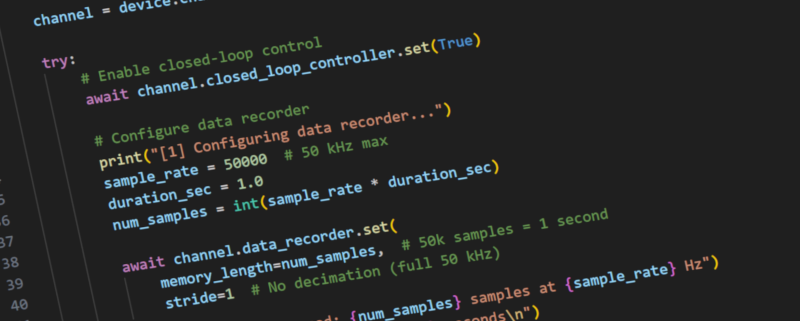

Introduction
Welcome to psj-lib
psj-lib is a comprehensive Python library for controlling piezoelectric amplifiers and control devices manufactured by piezosystem jena GmbH. The library provides an intuitive, asynchronous interface for precise position control, waveform generation, data acquisition, and advanced control system configuration.
What is psj-lib?
psj-lib is designed to provide researchers, engineers, and developers with a powerful yet easy-to-use Python interface for piezosystem jena devices. The library abstracts the complexity of low-level device communication while exposing the full capabilities of the hardware.
Key Features:
Asynchronous Architecture: Built on Python’s asyncio for efficient, non-blocking device communication
Multi-Device Support: Extensible framework supporting multiple device families (d-Drive and 30DV50/300)
Comprehensive Capabilities: Full access to position control, PID tuning, waveform generation, data recording, and filtering
Multiple Transport Protocols: Connect via Serial (USB) or Telnet (Ethernet)
Type-Safe API: Complete type hints for excellent IDE autocomplete and type checking
Extensive Documentation: Comprehensive docstrings, examples, and developer guides
Supported Devices
d-Drive Modular Amplifiers
The d-Drive series represents piezosystem jena’s modular piezo amplifier family, offering:
High Resolution: 20-bit DAC/ADC for precision control
Fast Sampling: 50 kHz (20 µs period) for responsive control
Modular Design: 1-6 channel configurations in compact enclosure
Advanced Control: Integrated PID controller with configurable filters
Waveform Generation: Built-in function generator with scan modes
Data Acquisition: 2-channel recorder with 500,000 samples per channel
Hardware Triggers: Precise timing and synchronization
30DV50/300 Standalone Amplifier
The 30DV50/300 is a single-channel amplifier designed for compact setups that only require one axis. It supports the same command set and capabilities as d-Drive channels, including PID control, waveform generation, and data recording.
Architecture Overview
The psj-lib library follows a hierarchical architecture:
PiezoDevice (Base Class)
├── Device-level operations
├── Channel discovery
└── Transport protocol management
│
└── PiezoChannel (Base Class)
├── Channel-level operations
└── Capability management
│
└── Capabilities (Features)
├── Status and monitoring
├── Position control
├── Closed-loop controller
├── PID tuning
├── Filter configuration
├── Waveform generation
└── Data recording
Three-Layer Design:
Device Layer: Manages device connection, discovery, and channel enumeration
Channel Layer: Provides access to individual amplifier channels
Capability Layer: Exposes specific hardware features as composable capabilities
Design Philosophy
Capability-Based Architecture
Instead of a monolithic device class, psj-lib uses capabilities to represent hardware features. Each capability is a focused module that encapsulates related functionality:
# Access capabilities as channel attributes
await channel.closed_loop_controller.set(True)
await channel.setpoint.set(50.0)
await channel.pid_controller.set(p=0.5, i=0.1, d=0.05)
This design provides:
Clarity: Clear separation of concerns
Discoverability: Easy to explore available features via autocomplete
Maintainability: Easy to extend with new capabilities
Type Safety: Each capability has proper type hints
Asynchronous by Default
All device communication is asynchronous, enabling:
Concurrent Operations: Control multiple channels simultaneously
Non-blocking: Keep UI responsive while waiting for device responses
Efficient: Minimize idle time in complex sequences
Scalable: Handle multiple devices without threading complexity
# Concurrent channel control
await asyncio.gather(
channel1.setpoint.set(30.0),
channel2.setpoint.set(60.0),
channel3.setpoint.set(90.0)
)
Transport Abstraction
The library abstracts transport protocols, allowing seamless switching between Serial and Telnet:
# Serial connection
device = DDriveDevice(TransportType.SERIAL, "COM3")
# Or Telnet connection
device = DDriveDevice(TransportType.TELNET, "192.168.1.100")
The same API works regardless of transport type.
Getting Started
Ready to start using psj-lib? Here’s what to do next:
Installation: See Installation for setup instructions
Connecting: Learn how to connect to your device in Connecting to Devices
Basic Usage: Follow the tutorial in Getting Started
Examples: Explore practical examples in Examples
API Reference: Browse the complete API in API Reference
Community and Support
Documentation: You’re reading it! This documentation covers everything from basic usage to advanced topics.
Examples: The library includes 10+ working examples demonstrating common tasks.
Developer Guide: See Developer Guide if you want to extend the library or add support for new devices.
Contact: For support, contact piezosystem jena GmbH.
License and Attribution
psj-lib is developed and maintained by piezosystem jena GmbH.
Authors: piezosystem jena GmbH
Version: 0.0.1
Python Version: 3.12+
What’s Next?
Continue to Installation to set up psj-lib and start controlling your piezosystem jena devices.